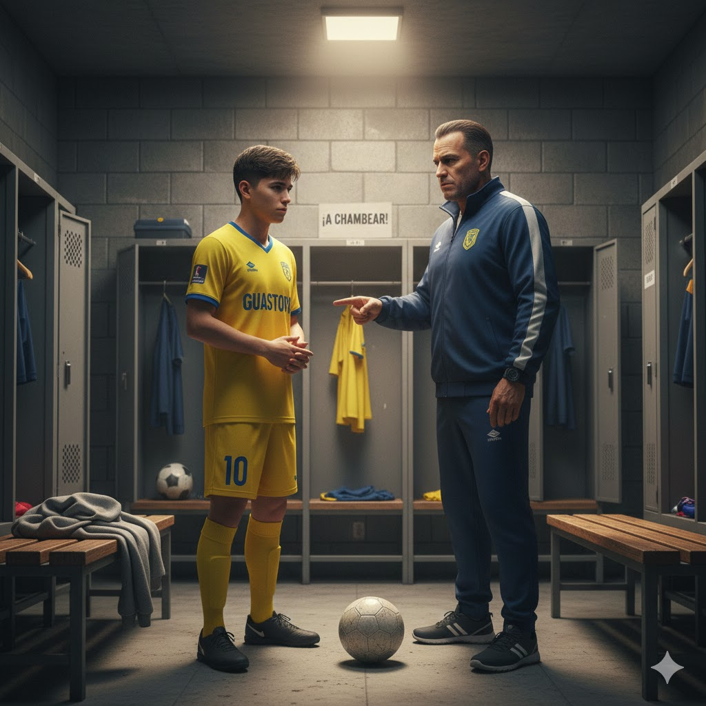

Diego Guevara 24128
Sistemas y tecnologias Web
Mi historia respecto a fuchibol
La Verdad
Llegás y decís la verdad: te confiaste y preferiste irte de fiesta a descansar por ser un niño rebelde. El DT se queda serio. Luego te dice: "te voy a dar una más, pero la última."
Vos respirás y pensás: "va, ahora sí, a chambear."
